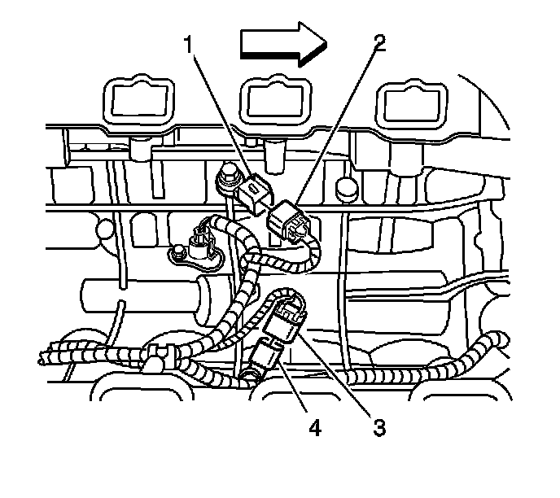

Knock Sensor 1 Replacement
Knock Sensor 1 Replacement
Removal Procedure

1. Remove the intake manifold. Refer to Intake Manifold Replacement (Service and Repair) .

2. Disconnect the electrical connector (3) from the knock sensor (KS) (4).
3. Remove the bolt in the center of the KS.
4. Remove the KS (4) from the engine block.
Installation Procedure
1. Thoroughly clean the mating surfaces of the KS and the engine block. The entire contact surface of the KS must lie directly on the engine block.
Notice: Refer to Fastener Notice (Fastener Notice) .
Important: DO NOT use washers, spring washers, or toothed washers when installing the knock sensor. Tighten the bolt to the proper torque.
2. Install the KS (1) and the bolt to the engine block.
Tighten the KS bolt to 20 N.m (15 lb ft).
Important: The KS wiring harness is held in place with several retaining clips.
3. Ensure that the wiring harness is installed correctly.
4. Connect the electrical connector (3) to the KS (4).
5. Install the intake manifold. Refer to Intake Manifold Replacement (Service and Repair) .